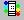

Quick Reference
What is a CAX file?
CAX file is the native proprietary file format of VCollab.
This file is currently generated using VMoveCAE utility from CAE result files.
How to generate a CAX file from CAE result and geometry files of Native CAD/CAM/CAE softwares?
Users can use VMoveCAE, a product of VCollab, to convert CAE result files into CAX files.
Visit http://www.vcollab.com to know more about VMoveCAE.
How to embed VCollab Presenter in Microsoft Powerpoint for Presentation?
- Open Microsoft Powerpoint
- Click Control Toolbox.
- Select VCollab Control.
- Draw a rectangle to indicate the size for the VCollab Control object.
- Right click on the VCollab Control
- Click VCollab Control | Edit menu item to get the Presenter ready.
Click here to know in detail.
How to Open a file in VCollab Presenter?
- Select Open File option from the Context menu.
- Select the file to be opened from the file open dialog box.
- The selected file will be loaded in the presenter.
How to use Scene Tree?
- Select Product Explorer option from the context menu.
- Select Scene Tree tab
- This displays the scene tree window, which shows the hierarchy of groups, parts and transforms of the object in the viewer window.
- Use the Product Tree to show / hide and highlight parts in the viewer.
How to Load CAE Results?
- Click  icon which opens up Results dialog box.
- Select a Result
- Select an instance from the Instance drop down list.
- Select a derived type from Derived type drop down.
- Notice that selected CAE results are applied concurrently in the viewer.
How to activate CAE Animation?
- Click icon to open up dialog to manage animation.
How to See Through a Model?
- Click Display mode from the context menu.
- Select Transparent and notice that all parts of the model are transparent.
How to Show/Hide parts?
- Select Product Explorer from the context menu.
- Select Scene Tree tab.
- Expand Product tree.
- Uncheck a Part to hide and check again to show.
How to create a viewpoint state?
- Select Product Explorer from the context menu.
- Select Viewpoints tab
- Right click on the panel
- Click Add Viewpoint
- The Add Path dialog box opens if there is no path available.
- Enter a name for the path.
- Click Ok which opens up Add Viewpoint dialog.
- Enter a name.
- Current scene view is stored as a viewpoint state.
- Users can retrieve the viewpoint state at any time by just clicking on the viewpoint state name.
- Users can store all observations as a number of viewpoint states.
How to create a Viewpoint Animation?
- Open Viewpoints panel from Product Explorer.
- Right click in the viewpoints panel.
- Select Animate Path from the drop down menu.
- Animation starts with the first viewpoint state and ends with the last one.
How to change CAE legend colors?
- Click
 icon.
icon. - Select Edit Legend tab.
- Select Number of colors in the Palette drop down list.
- Click a specific color in the palette to change the individual color.
- Select a color or define a custom color in the opened up color picker dialog.
- Click Apply to apply the changes in the viewer.
How to change the CAE Result range?
- Click icon. It pops up CAE Settings dialog.
- Click Update Legend Tab.
- Check both the check boxes provided for Min and Max.
- Enter a new range in edit boxes provided for Min and Max.
- Click Update Current Instance to apply the change in current frame alone.
- Click Update All Instances to apply the change to all frames.
How to find distance between two points in the model?
- Select Measure option from viewer context menu items.
- Select Distance option.
- Click a start point on the model.
- Click an end point on the model.
- The distance value is displayed in the right most corner of the viewer.
How to pick and move a part?
- Select a part or group of parts.
- Select Pick from the context menu.
- Drag with the right mouse button to move the part.
- Select Pick option again to drop the part
How to set an exploded view?
- Select Explode option from the context menu.
- Click Explode in the opened up dialog to set the exploded view of the model.
- Click Animate check box to enable animation in exploding model
How to probe CAE Result?
- Click the probe icon from the toolbar.
- Click on the model and notice that the CAE value for the clicked node is displayed as a label in the viewer.
- Click away from the model to hide displayed labels.
How to move labels?
- Click icon
 from the toolbar.
from the toolbar. - Click on a label and move the mouse pointer to the new position.
- Click on the new position.